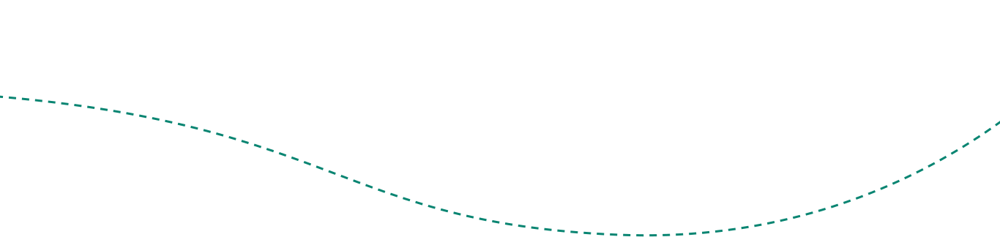
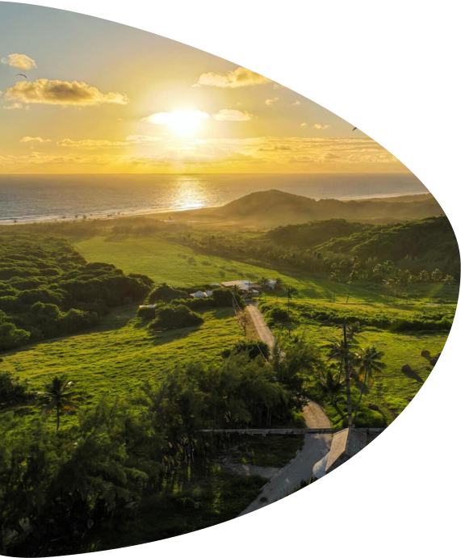

В карибском регионе преобладает теплый, солнечный климат, что делает его привлекательным направлением для круизных путешествий круглый год. В состав Карибского бассейна входит около 700 островов, каждый из которых обладает своими уникальными культурными особенностями и природным богатством.
Карибские острова особенно славятся своими живописными береговыми линиями, белоснежными пляжами, теплыми водами и коралловыми рифами. Здесь есть отличные условия, чтобы заняться разными водными видами спорта: дайвингом, сноркелингом, серфингом или глубоководной рыбалкой.
Рассмотрим маршрут круизного тура, охватывающий одни из самых интересных и экзотических мест Кариб.
ИНФОРМАЦИЯ О ТУРЕ
ВИЗА
многократная туристическая виза Французских Департаментов Америки (Франция), срок действия паспорта – 3 месяца.
ТУР АКТУАЛЕН
с 06.01.2024
по
16.03.2024
СТОИМОСТЬ
от 1950€ за 2 взрослых
(сборы и питание включены)
ПРОДОЛЖИТЕЛЬНОСТЬ ТУРА
8
дней
ЛАЙНЕР
MSC Seaside
КАКИЕ СТРАНЫ И ГОРОДА ПОСЕТИТЕ
Форт де Франс (Мартиника)
Пуэнт-а-Питр (Гваделупа)
Кастри (Сент-Люсия)
Бриджтаун (Барбадос)
Кингстаун (Сент-Винсент и Гренадины)
Сент-Джордж (Гренада)
МАРШРУТ КРУИЗА

1
день
2
день
3
день
4
день
5
день
6
день
7
день
8
день

Форт де Франс, Мартиники
Круизный лайнер отправляется из Форт де Франса, Мартиники. В идеале рекомендуем прибыть в город за 1 день до отправления лайнера, чтобы у Вас была возможность отдохнуть после дороги, полюбоваться красотами Форт де Франса и не опоздать на посадку на круизный лайнер. Время отправления из порта - 23:00.
Форт де Франс – столица и крупнейший город острова Мартиника, заморская территория Франции. Исторические достопримечательности, нетронутая экзотическая природа и живописные песчаные пляжи ежегодно привлекают тысячи туристов в это сказочное место.
Что посмотреть:
исторический район Форт де Франс, библиотека Шольшера, Собор Сен-Луи, культурный парк Aimé Césaire, ботанический парк Jardin de Balata, Региональный природный парк Мартиники.
Пуэнт-а-Питр, Гваделупа
В 8:00 круизный лайнер прибывает в Пуэнт-а-Питр, Гваделупа. Пуэнт-а-Питр – столица и крупнейший город Гваделупы. Это место знаменито среди туристов своими колоритными улочками со стрит-артом и оживленными рынками, где можно попробовать изумительные экзотические фрукты и овощи.
Отправление лайнера в 19:00.
Что посмотреть:
сердце города площадь Виктуар, церковь Сен-Пьер и Сен-Поль, рынок Market Darse, павильон L'Herminier, центральный рынок Сент-Антуан.
Кастри, Сент-Люсия
Кастри, столица Сент-Люсия, – место, где Вы ярко проведёте сегодняшний день. Лайнер прибывает в порт в 8 утра, в вашем распоряжении будет целых 11 часов, чтобы исследовать город с разных сторон (отправление лайнера в 19:00). Кастри сразу влюбляет яркими красками и живописной природой – широкая гавань, окруженная холмами, песчаные берега, коралловые рифы и тихо покачивающиеся пальмы.
Что посмотреть:
пляж с белоснежным песком Виги, национальный парк Пиджен-Айленд, площадь Колумба с 400-летним деревом самсан, Парк Кинг-Джордж, крепость Кастри, базар Кастри, костёл Святого Алойзия, Площадь Дерека Уолкотта, горы Питоны.
Бриджтаун, Барбадос
В четвертый день круизного путешествия лайнер доставит Вас в Бриджтаун, Барбадос. Бриджтаун – столица и самый оживленный туристический город Барбадоса.
Вы проведёте здесь целый день (с 7:00 до 21:00), так что время хватит как для культурной программы, так и для пляжного отдыха на белоснежных песчаных берегах острова.
Что посмотреть:
здание Парламента в неоготическом стиле, Площадь Национальных Героев, 1000-летний баобаб в Королевском парке, исторический центр Гаррисон, залив Батшеба, пляж Batts Rock Beach и Browne's Beach.
В море
Пока лайнер MSC Seaside уверенно держит курс к следующему пункту назначения, у Вас есть возможность насладиться безмятежными пейзажами Карибского моря, а также исследовать богатую инфраструктуру лайнера MSC Seaside. К Вашим услугам бассейны, аквапарк, спа, многочисленные ресторана и бары, болуниг, игровые зоны и многое другое.
Кингстаун, Сент-Винсент и Гренадины
В 8 утра шестого дня путешествия круизный лайнер пришвартуется у берега еще одного невероятно живописного места. Добро пожаловать в Кингстаун, столицу островного государства Сент-Винсент и Гренадины.
Сегодня Вас ждут узкие улочки, колоритные здания самых различных стилей, начиная от колониального до карибского креольского и невероятные природные красоты: белоснежные пляжи, водопады, холмы и экзотические растения. Времени насладиться островом отведено вдоволь, круизный лайнер отправляется из порта в 19:00.
Что посмотреть:
форт Шарлотт, Ботанические сады Сент-Винсент, церковь Святой Марии, старый квартал Фредерик, водопад Дарк-Вью, водопад Бален (Baleine), залив Валлилабу с черным пляжем, покрытым вулканическим песком, где снимались первые сцены фильма «Пираты Карибского моря: Проклятие Черной жемчужины» и водопад Валлилабу, пляж Букамент.
Сент-Джордж, Гренада
Следующая остановка - Сент-Джордж, Гренада. Кусочек рая на Земле, куда примчал Вас круизный лайнер сегодня - это Сент-Джордж, Гренада. Прибытие в порт в 8:00.
Сент-Джордж — это не просто город. Здесь старинная архитектура соседствует с красотой белоснежных пляжей, а воздух наполнен ароматом мускатного ореха и тропических цветов.
Лайнер отправляется из порта Сент-Джордж в 19:00.
Что посмотреть:
форт Фредерик, пляж Гранд-Анс, водопад Аннандейл, завод по производству рома River Antoine, рыбацкая деревня Гуяве и станция по переработке мускатного ореха Гуяве, тропический лес Гранд-Этан.
Форт де Франс, Мартиники
Утром восьмого дня (в 7:00) круизный лайнер вернется в точку отправления. Нужно освободить каюту и покинуть корабль.